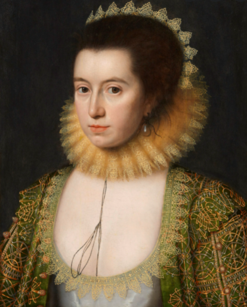

William Shakespeare(1564-1616)
William Shakespeare (April 26, 1564, Stratford-upon-Avon, England - April 23, 1616) - English poet
and playwright, often considered the greatest English-language writer and one of the best playwrights in the
world.
He is often called the national poet of England. The works that have come down to us, including
those
co-authored with other authors, consist of 38 plays, 154 sonnets, 4 poems and 3 epitaphs.
.
Shakespeare's plays have been translated into all major languages and are performed more often than the works
of other playwrights.
Biography
Parents
this date coincides with the exact day of his death.In addition, April 23 marks the day of St. George, the patron saint of England, and to this day the legend could specifically mark the birth of the greatest national poet.
His father, John Shakespeare (1530-1601), was a wealthy artisan (glove maker), often elected to
various important government positions. In 1565, John Shakespeare was an alderman,
and in 1568 - Bailiff (chairman of the city council). He did not attend
church services, for which he paid large fines (possibly a secret Catholic)
Shakespeare's mother, Mary Arden(1537-1608), belonged to one of the oldest Saxon families. In total, the couple had 8 children, William was born the third.
Mary Arden(1537-1608)
Education
It is believed that Shakespeare studied at the "School of Grammar" in Stratford, where he had to
gain a good knowledge of Latin: a Stratford teacher of Latin and literature wrote poetry in Latin.
Some
scholars claim that Shakespeare attended the school of King
Edward VI in Stratford-upon-Avon, where he studied the works of poets such as Ovid and Plautus,
but school journals have not survived, and now
nothing can be said for sure.
Stratford`s school
Wife and Children
In 1582, at the age of 18, he married Anne Hathaway, the daughter of
a local landowner, who was 8 years his senior. Anne was pregnant at the time of her marriage. In 1583 the
couple had a daughter, Susan ,
and in 1585, twins: a son, Hamnet, who died at the
age
of 11 in August 1596, and a daughter, Judith.
London and a theatrical career
Biographers believe that Shakespeare's career could begin at any time, beginning in the mid-1580s.
From 1594, Shakespeare's plays were staged only by the troupe of the "Lord Chamberlain's Servants".
This
troupe
also included Shakespeare, who at the end of 1594 became its co-owner. The troupe soon became one of London's
leading theater groups. After the death of Queen Elizabeth in 1603,
the troupe received a royal patent from
the
new ruler, James I, and became known as the "Servants of the King".
Globe Theatre
Recent Years and Death
On April 23, 1616, Shakespeare died. It is traditionally believed that he died on his birthday,
but there is no certainty that Shakespeare was born on April 23.
Shakespeare is survived by a widow,
Anne (d. 1623), and two daughters. Susan Shakespeare has been married to John
Hall since 1607, and Judith Shakespeare married
two months after Shakespeare's death
to
winemaker Thomas Quinny.